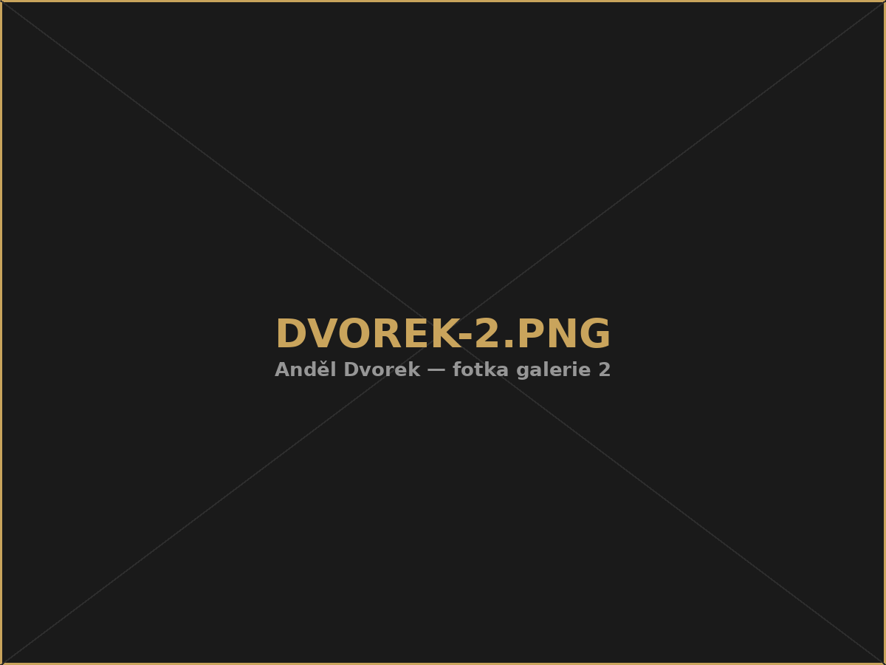
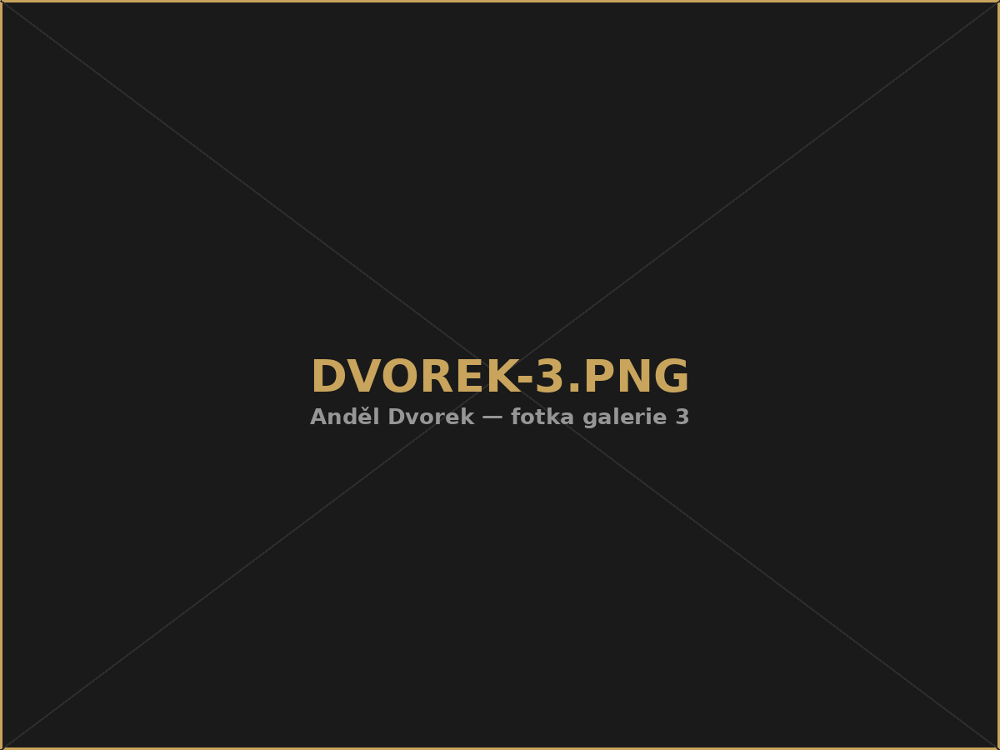

Domů›Dvorek
Klidná venkovní oáza ukrytá v centru Plzně, ideální pro posezení pod širým nebem.
Zobrazit menuAnděl Dvorek je ideálním místem pro posezení s přáteli, letní koncerty, firemní akce i odpočinek u dobrého jídla a pití pod širým nebem.
Za pěkného počasí je dvorek přirozeným pokračováním Anděl Café i Bistra — stačí přejít z kavárny nebo z klubu ven a užít si klid v srdci Plzně.



Napište nám a domluvíme si termín i program přímo na míru vaší akci.